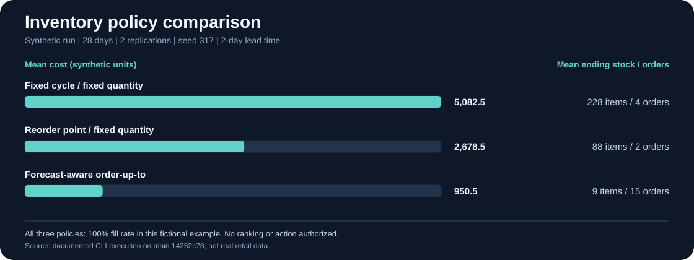
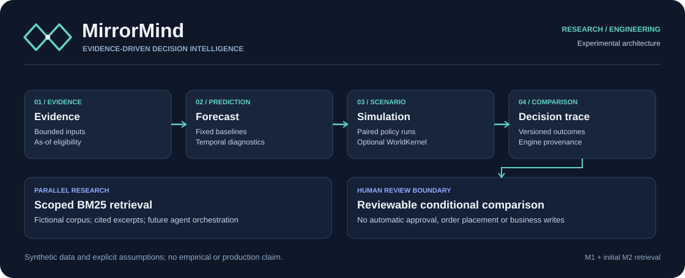

Get started
Installation, examples and local API.
Read the project guideMirrorMind connects evidence, forecasting and simulation in a transparent, reproducible workflow. The first application explores how inventory policies behave under shared fictional demand and explicit assumptions.
No installation, account, API key or hosted model required.

The chart is the documented alpha example. The interactive snapshot is generated from the current reviewed source, with seed 317, two replications and a 28-day horizon. Select an existing lead-time case and inspect the forecast, assumptions and decision trace.
Fictional data only. The browser does not run new simulations, establish forecast accuracy or authorize a business action.

Observed information, predictions, simulated outcomes and human review remain separate. The public demo uses the Python reference engine; the optional independent WorldKernel engine is not included.
Choose a starting point. Technical guides are maintained in the repository and linked to the exact source revision used for this site.
Installation, examples and local API.
Read the project guideFollow the complete fictional inventory experiment.
Workflow walkthroughReproduce the snapshot and inspect its boundaries.
Report guideNavigate the architecture and implementation.
System map · Repository atlasTemporal validation and synthetic release vintages.
Census vintage evaluationTests, coverage, type checks and reproducible builds.
Quality guideUm projeto de pesquisa em inteligência de decisão que reúne evidências, previsão e simulação em um fluxo reproduzível. Explore a demonstração de planejamento de estoque, com dados fictícios e hipóteses explícitas. A interface está em inglês; o README em português explica como executar e entender o projeto.